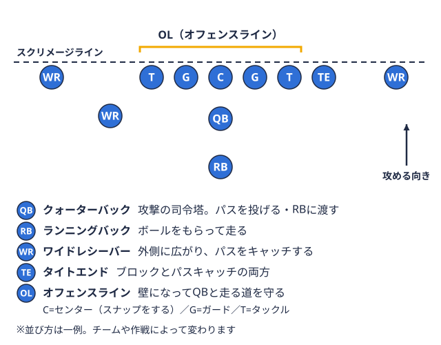
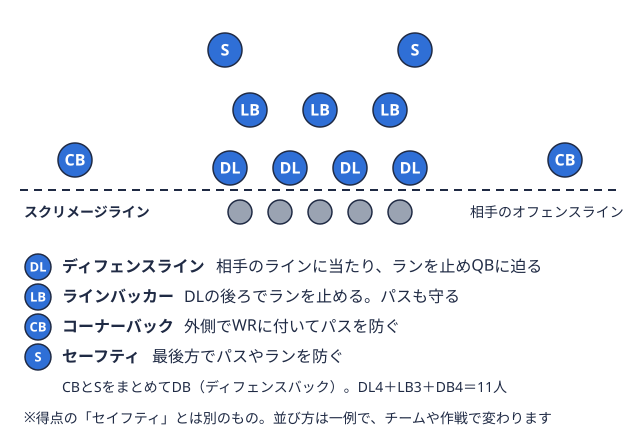

怪我と予防 2026-10-16
アメフトの膝の怪我（ACL損傷）を予防する方法｜部員が知っておきたい基本
アメフトは急な方向転換、急停止、ジャンプ後の着地、そして相手との接触が絶え間なく続く競技です。そのため「膝を痛めた」「前十字靭帯膝の中にある靭帯の一つ。すねの骨が前にずれるのを防ぎ、膝のねじれも抑えて安定させる。用語辞典で見る（ACL）を切った」という話は、部員なら一度は耳にしたことがあるのではないでしょうか。この記事では、ACL損傷の仕組みと予防の考え方を、整形外科領域の診療ガイドラインや大学研究者の解説といった公開情報をもとに整理します。医療行為の代わりになるものではなく、練習に取り入れる前の「基本の整理」としてお読みください。
ACL（前十字靭帯）とは何か
前十字靭帯（ACL）は、膝の中にあって、すねの骨（脛骨）が前方にずれるのを防いだり、膝のねじれを制御したりして膝の安定性を保つ靭帯です。日本整形外科学会と日本関節鏡・膝・スポーツ整形外科学会が作成した「前十字靱帯（ACL）損傷診療ガイドライン2019（改訂第3版）」は、疫学・診断・治療・再建術・リハビリテーションと復帰、予防などを扱う診療ガイドラインで、Mindsガイドラインライブラリで概要が公開されています。
ACL損傷は、急激な方向転換、突然の停止、ジャンプ後の着地、または膝への直接の接触などが原因となり、アルペンスキー、サッカー、アメリカンフットボール、バスケットボールなどで多いとされる傷害です。アメフトは、切り返しや急停止、タックルボールを持つ相手を、体を使って止めること。攻撃のラインの端に立つ選手の呼び名でもある。用語辞典で見るでの踏み込み、ブロックでの押し合いなど、膝に負担がかかる動きが多い競技といえます。
損傷が起こりやすい場面
ACL損傷は、相手と接触して膝が外から押されて起こる場合だけでなく、接触がない動作の中で起こる場合があります。特に注目されるのは次のような場面です。
- 走っている状態から急に止まる、または急に向きを変える（カット）
- ジャンプやキャッチの後に着地する
- 低い姿勢でのブロックやタックルで、片脚に体重が乗った状態から踏ん張る
いずれも、膝が内側に入りやすい（膝と足先の向きがそろわない）、体幹が傾いたまま着地する、といった動作の乱れが関係しやすいといわれています。ここで言えるのは「動作の質が乱れやすい場面は注意が必要」という傾向であり、これだけで損傷が決まるわけではありません。疲労が溜まった練習の後半や、ウォームアップが不十分な状態でも動作が崩れやすいため、練習の組み方も含めて考える必要があります。
予防トレーニングの基本的な考え方
大学研究者の解説（東海大学の講義紹介）では、膝前十字靭帯損傷の予防には、筋力・バランス・柔軟性・敏捷性など、さまざまな体力要素に関するエクササイズを複数組み合わせた「マルチコンポーネントプログラム」を取り入れると効果が高いことがわかっている、と説明されています。同じ解説では、このような予防エクササイズによってけがの発生リスクを半分まで減らせるという研究結果が出ているとされています。ただし、この数値は研究対象や競技によって異なる可能性があり、アメフトの部員に同じ効果が出ると保証するものではない点には注意が必要です。
予防トレーニングの内容は、一般的には次の6つの要素に整理できます。
- 筋力（太もも前後・お尻・体幹）
- 柔軟性（股関節周り・太ももの裏）
- アジリティ素早く加速や減速をして向きを変える能力。まっすぐ走る速さとは別の力。用語辞典で見る（方向転換の動き）
- ジャンプ（跳ぶ・着地する練習）
- バランス（片脚で姿勢を保つ）
- 動作の指導（膝が内側に入らない着地・切り返しのフォーム確認）
大切なのは、特別な器具が必要な種目を増やすことよりも、「着地」「切り返し」「片脚での安定」といった、試合中に実際に起こる動きの質を練習で整えることです。
練習に取り入れるときのポイント
予防トレーニングは、ウォームアップの中に組み込むと続けやすくなります。一般に、10〜15分程度のメニューを週に2〜3回続ける形がよく紹介されていますが、これも目安であり、チームの指導者・トレーナーと相談して無理のない頻度を決めるのが現実的です。
着地と切り返しのフォームを確認する
ジャンプ後の着地では、膝が内側に入っていないか、つま先と膝の向きがそろっているか、体幹が大きく傾いていないかを確認します。可能であれば部員同士でスマートフォンの動画を撮影し、フォームを客観的に見直すと気づきやすくなります。
疲れてきたときこそ動作を意識する
練習の後半は疲労で動作が崩れやすくなります。重要な切り返しやコンタクトを含むメニューは、疲労が溜まる前に行う、休憩を適切に挟むなど、メニューの順序や休憩の取り方も予防の一部になります。
回復と体づくりを同時に進める
体重を増やすことを目標にしている部員は、増量と同時に下半身・体幹の筋力も整える必要があります。体の重さが増えると、着地や切り返しで膝にかかる負荷も増えるためです。食事面についてはアメフト 増量メニューの食事ガイドも参考にしてください。
ポジションごとの注意点を考える
予防の基本は全ポジション共通ですが、動きの種類によって注意したい場面は少しずつ異なります。
| ポジション例 | 膝に負担がかかりやすい動き | 意識したいポイント |
|---|---|---|
| RBQBからボールを受け取って走り、陣地を進める選手。足の速さと当たり負けしない強さが求められる。  用語辞典で見る・WRフィールドの外側に広がり、投げられたパスをキャッチして陣地を進める選手。用語辞典で見る・DB守備の後ろ側で、相手のパスを防ぐ選手の総称。後方と外側を守る。 用語辞典で見る | 急停止からの切り返し、ルートでのカット | 減速する動作の練習、膝とつま先の向きをそろえる |
| QB攻撃の司令塔。作戦に合わせて、パスを投げたり、走る選手にボールを渡したりする。用語辞典で見る | 投球後のステップ、ポケットでの足の運び | 片脚での安定性、体幹の安定 |
| OLスクリメージライン上に並ぶ5人の壁役。パスを投げる選手を守り、走る選手の道を作る。用語辞典で見る・DL守備の最前列に並ぶ選手たち。相手のラインに当たって走るプレーを止め、パスを投げる選手に迫る。用語辞典で見る | 低い姿勢での押し合い、踏ん張り | 股関節周りの筋力、足元の向き |
| LB守備の最前列のすぐ後ろに立ち、走るプレーを止め、パスも守る選手。守備の要といわれる。用語辞典で見る | 前後左右への素早い反応、タックル | 切り返しと踏み込みのフォーム |
上の表は「膝に負担がかかりやすいと考えられる動作」を整理した編集部の目安であり、特定のポジションで損傷が多いと示す統計ではありません。各ポジションの動きの詳しい解説は、RBの走り方と練習メニューやDBのマンツーマンのコツもあわせて確認してください。
膝の違和感を覚えたときの対応
予防に取り組んでいても、膝に違和感や痛み、腫れが出ることはあります。次の点を意識しておくと、悪化を防ぎやすくなります。
- 「そのうち治る」と判断して練習を続けず、トレーナーや指導者に早めに報告する
- 膝が「ガクッと外れる感じ」「腫れが引かない」「体重をかけられない」といった症状があるときは、整形外科（スポーツ整形）を受診する
- 診断後の復帰は、医師や理学療法士の判断のもとで段階的に進める
ACL損傷では、再建手術を行う場合、復帰までに長い期間のリハビリテーションが必要になるのが一般的です。復帰の時期やリハビリの進め方は個人差が大きいため、ここでは目安を示さず、必ず医療者の指示に従ってください。接触を伴う競技ではコンタクト時の安全の考え方も重要です。タックルの当たり方についてはアメフト タックルの正しいフォームと安全な当たり方で、頭頚部の安全についてはヘッドギアの記事で整理しています。
シーズンの流れに合わせて予防を組み込む
関東学生リーグは春季オープン戦リーグ戦の順位や入れ替えに関係しない、春に行われる試合。秋の本番に向けた調整の場。用語辞典で見るから秋季リーグ戦、そして冬の入替戦・全国大会へと続くため、試合のたびに膝に負荷がかかります。シーズン中は試合に向けた調整が優先され、予防トレーニングが後回しになりがちです。そこで、次のように時期ごとに役割を分けておくと続けやすくなります。
- オフシーズン・春先: 下半身・体幹の筋力、着地とカットのフォームづくりに時間をかける
- 秋季リーグ戦期間: ウォームアップの中で短時間でも継続し、疲労が溜まる週は量を調整する
- 試合後・オフ日: 膝の違和感がないかを確認し、必要に応じて早めに相談する
関東TOP8・BIG8の今シーズンの試合間隔や対戦カードは、サイトの一次データページで確認できます。連戦が続く時期の目安として活用できます。
- TOP8 日程・結果 ― 試合の間隔と対戦カード
- TOP8 順位表 ― 現在の勝敗・順位
- BIG8 日程・結果 ― BIG8の試合日程
- TOP8 記録室 ― 過去シーズンの記録
まとめ
膝の前十字靭帯（ACL）損傷は、急停止・方向転換・着地・接触といった、アメフトに日常的な動きの中で起こりうる傷害です。公開されている診療ガイドラインや専門家の解説では、筋力・柔軟性・敏捷性・ジャンプ・バランス・動作指導を組み合わせた予防プログラムを日々の練習に取り入れる考え方が示されています。予防効果として「リスクを半分に減らせる」とする研究が紹介されていますが、数値は研究条件に依存するため、過信せず、フォームの確認と疲労管理、違和感を感じたときの早めの相談とあわせて取り組むことが現実的です。まずは次の練習のウォームアップに、着地と切り返しのフォーム確認を1つ加えるところから始めてみてください。
出典・参考
この部活・競技を応援したい方へ
協賛・応援はこちらから。
取材してほしい部活を募集中
あなたの部活・チームを取材してほしい方はこちらから。
オフシーズン・引退後に、長期インターンという選択
部活で培った力を実務で試す。16タイプ診断（30秒）で合う企業がわかります。